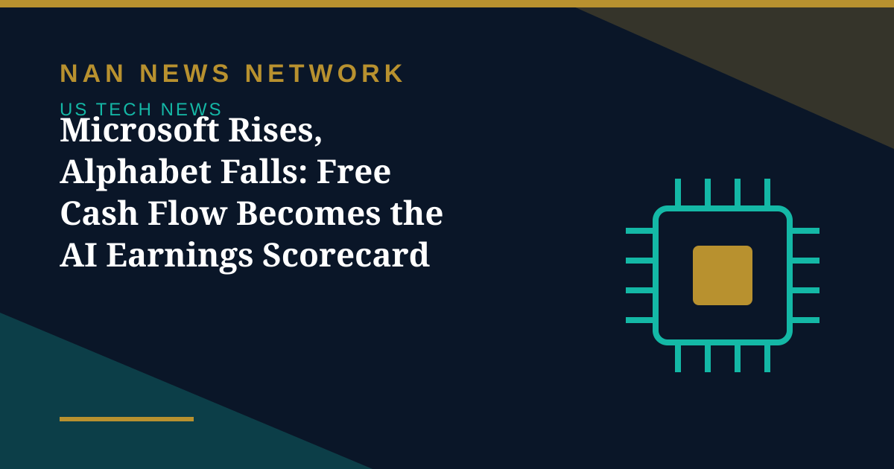

Microsoft Rises, Alphabet Falls: Free Cash Flow Becomes the AI Earnings Scorecard

Two of the world's biggest technology companies reported earnings on the same night, and the market delivered a split verdict. Microsoft shares rose about 4% in after-hours trading on October 28, while Alphabet shares fell about 10%, after results that showed how differently the two giants are funding the artificial intelligence buildout.
Microsoft beats on revenue, profit and cash
Microsoft reported revenue of $92.3 billion, up 19% from a year earlier, beating analyst expectations, with adjusted earnings per share of $4.89 against a $4.73 consensus. Azure revenue grew 48% to $33.2 billion, and the company generated $18.6 billion in free cash flow despite spending $45.2 billion on AI capital expenditures. Chief executive Satya Nadella said the company is driving innovation in the cost-performance curve so customers can turn tokens into business outcomes.
Alphabet's cloud doubles, but cash flow turns negative
Alphabet's Google Cloud revenue jumped 103% to $30.7 billion, more than twice Azure's growth rate, yet the company missed expectations for revenue, earnings per share and search advertising. Alphabet spent $51.4 billion on capital expenditures, more than its operating cash flow, producing a free cash flow deficit of about $9.1 billion — its second consecutive negative quarter and its first such deficits since going public in 2004, according to reports on the results.
What comes next
The contrast has reframed how investors judge AI spending: not by how fast cloud revenue grows, but by whether the spending generates cash. Alphabet's shortfall, covered in part by bond sales and stock issuance, reignited the debate over AI returns. The test continues Thursday, when Amazon reports after the market close, with AWS growth and capital spending in focus.
Sources: CNBC, Aju Press, Yahoo Finance reports, October 28-29, 2026
More on US Tech News
- Nvidia Puts $3 Billion Into Meta as AI Partnership Deepens — and 'Circular' Worries Grow
- SK Hynix Profit Jumps More Than Sevenfold as AI Rally Faces Earnings Test
- Judge Orders OpenAI to Disclose Apple Hiring Records in Talent Dispute
- Apple Unveils M6 MacBook Pro and iMac With Faster On-Device AI
- OpenAI Launches GPT-6.1 Terra With Lower API Prices
- Musk Says SpaceX Closed $40 Billion in GPU Debt and Warns of a Neocloud Shakeout
- AI Inference Prices Have Fallen as Much as 80 Percent Since June, Analysis Finds
- White House Names Jay Clayton as AI Czar to Lead 'Super Intelligence Force'
- SpaceX Q3 2026: $14.6 Billion Revenue as Starship Flight 15 Targets a Dual-Stage Catch
- US Orders DeepSeek Stripped From Federal Civilian Systems